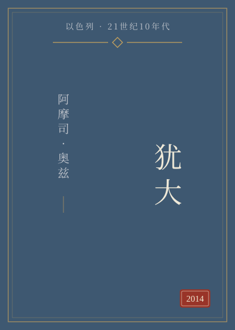
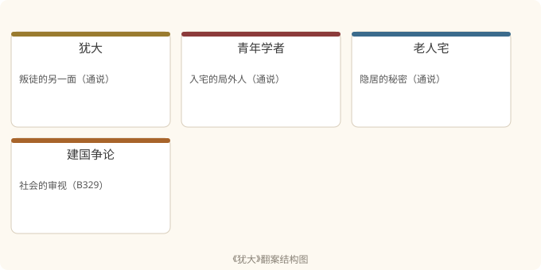

犹大
一、基本信息
| 作者 | 阿摩司·奥兹 |
|---|---|
| 成书/出版 | 2014年（Britannica B329：Judas (2014)——received the German Internationaler Literaturpreis in 2015） Amos Oz — Encyclopaedia Britannica（百科全书） |
| 国别/地区 | 以色列 |
| 时代 | 现当代 · 21世纪10年代 |
| 体裁 | 长篇小说 |
| 语言 | 希伯来语 |

《犹大》翻案结构图（主题·结构图）
二、创作背景
Britannica（B329）：Judas——获2015年德国 Internationaler Literaturpreis（国际文学奖）。
作者页（B329）：奥兹——'in whose works Israeli society is unapologetically scrutinized'；回忆录《爱与黑暗的故事》(2002)后重返小说。
题材（通说待核）：耶路撒冷的青年学者与神秘老人家中'犹太人犹大'的隐居者——对犹大形象的翻案与以色列建国争论。
三、内容脉络
青年学者入住老人宅邸——与隐居老人及其照护者的三角（情节通说待核——B329未载剧情）。
'犹大'的重新解读：从叛徒到另一层含义（翻案论述通说待核）。
四、主要人物表
| 人物 | 身份 | 说明 |
|---|---|---|
| 什穆埃尔 | 青年学者 | （通说待核，B329未载） |
| 格罗法纳斯老人 | 隐居者 | （通说待核，B329未载） |
五、主题与艺术特点
- 犹大形象的翻案（通说待核）。
- 以色列建国路线之争——'毫不留情的审视'（B329：unapologetically scrutinized）。
- 1959-60年代耶路撒冷（时代背景通说待核）。
六、影响与评论
- Britannica：Judas (2014)——2015年 Internationaler Literaturpreis（B329）。
Amos Oz — Encyclopaedia Britannica（百科全书） - Britannica：奥兹作品对以色列社会的审视定位（B329）。
Amos Oz — Encyclopaedia Britannica（百科全书）
七、阅读建议
难点
- 犹大在基督教与犹太传统中的双重形象。
- 以色列建国史争论。
- 《犹大》中译本（译林出版社——通说待核）。
- 希伯来文原版。
奥兹进阶；先读回忆录《爱与黑暗的故事》。
八、待核实
- 什穆埃尔/格罗法纳斯人名核对（B329未载）。
- 2014年出版（Keter说）待核。
- '翻案'论述细节待核。